About 2 minutes, 16:9. Hatched boxes are the clips you film (F1 to F4). Every number and sentence is the app's real output from the CI run.
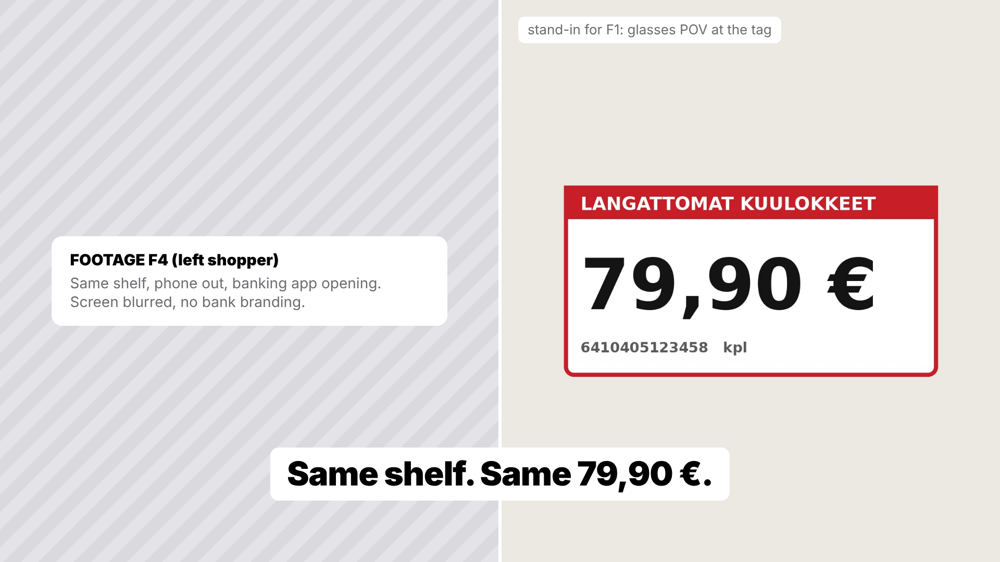
Hard split from frame 0. Left: your footage of a shopper opening a banking app. Right: the glasses' view of the tag. One caption runs across the seam.
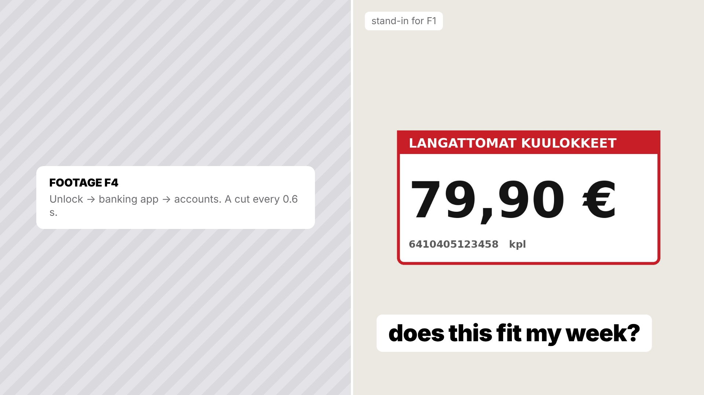
Left cuts every 0.6 s: unlock, app, accounts. Right holds still while “does this fit my week?” types on.
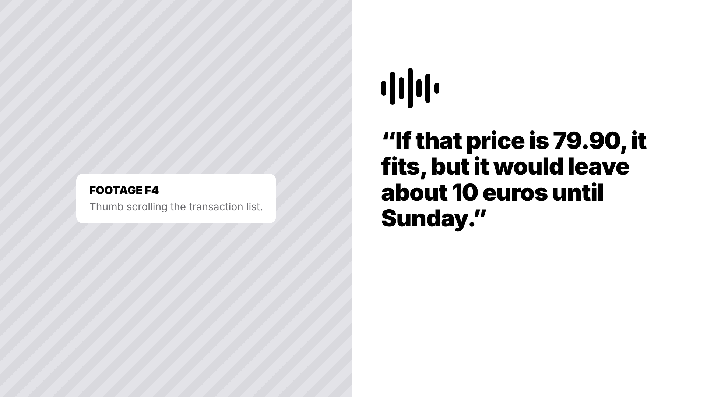
Right: the real spoken answer as big type with a waveform. Left: still scrolling transactions.
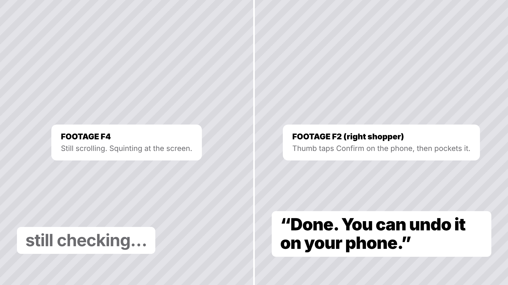
Right: thumb taps Confirm (F2), “Done. You can undo it on your phone.” Left: “still checking…”.
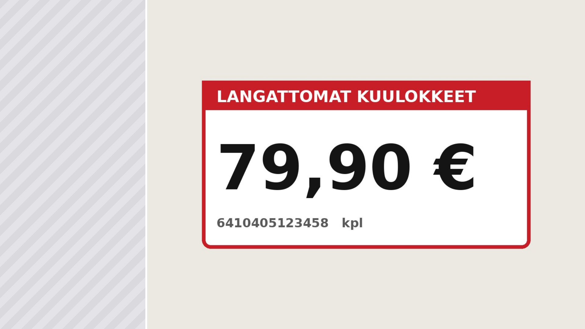
The seam pushes left and the old way leaves the frame. The left side's sound cuts to silence.
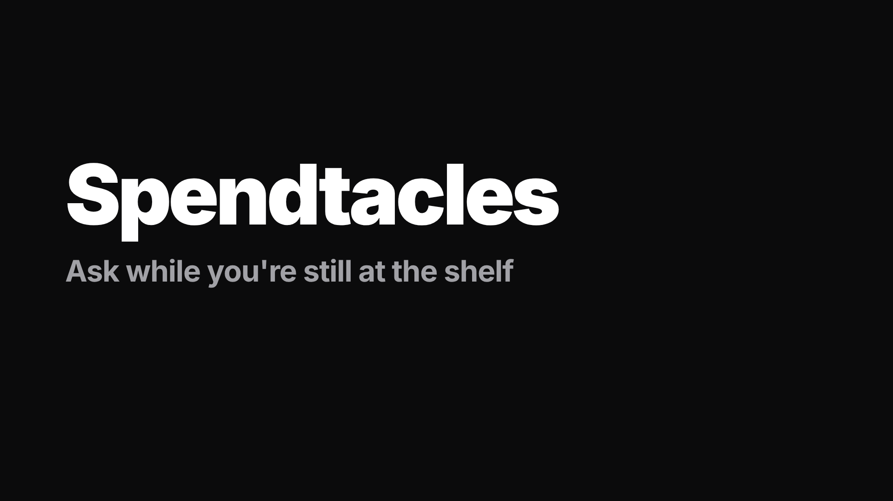
Dark card, the name wiped in at full width, then the promise.
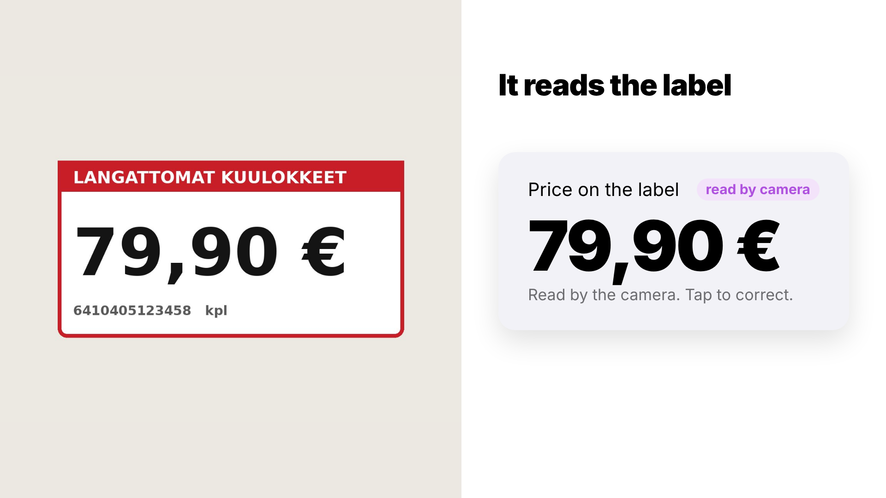
The real tag. 79,90 € lifts off it into the app's own row, with the purple “read by camera” chip.
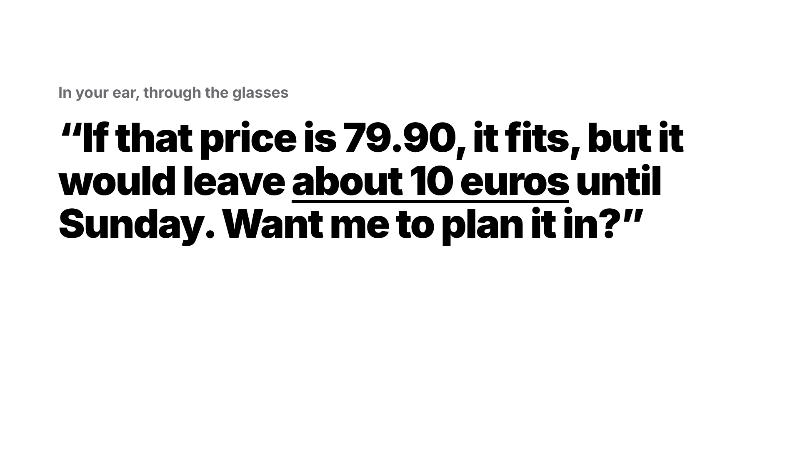
The real 21-word answer, typed on word by word. “about 10 euros” carries into the next shot.
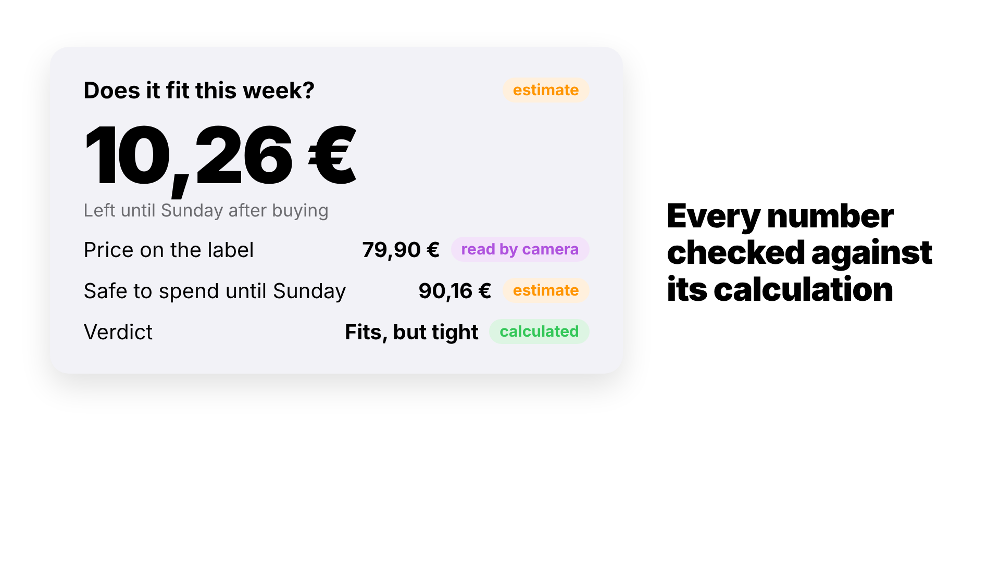
The real answer card at 1.8×: every row has its evidence chip.
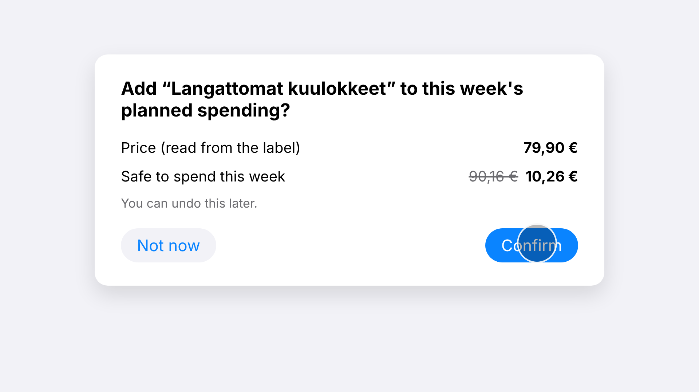
The real confirm sheet. The thumb lands on Confirm, with a click.
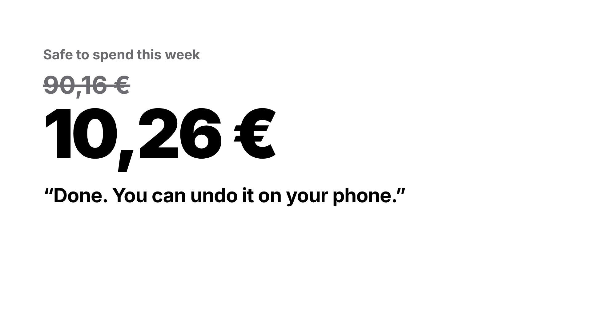
Payoff: 90,16 € ticks to 10,26 € in blue, settles in black, then “Done.”
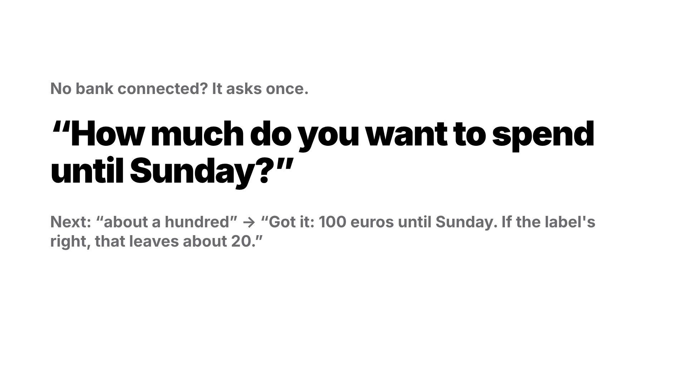
The no-bank mode, one line at a time, from the app's real replies.
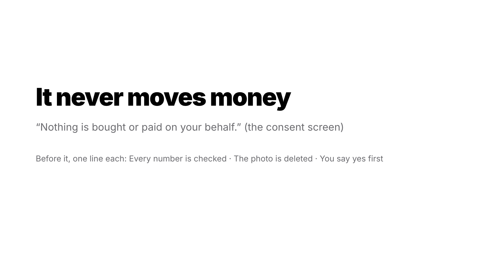
Four lines, one per beat. The still shows the last one with its real consent sentence.
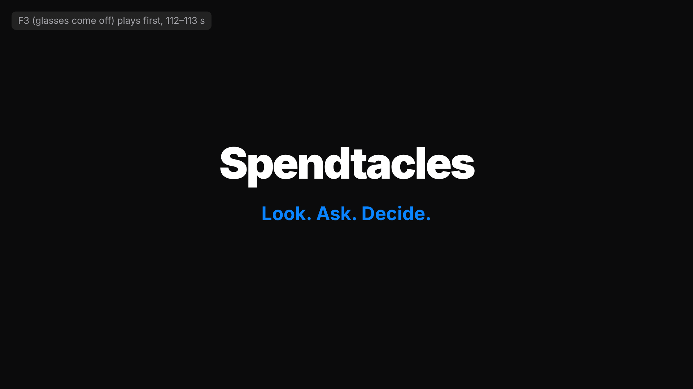
F3: the glasses come off. Then the name and the line, held to the end.